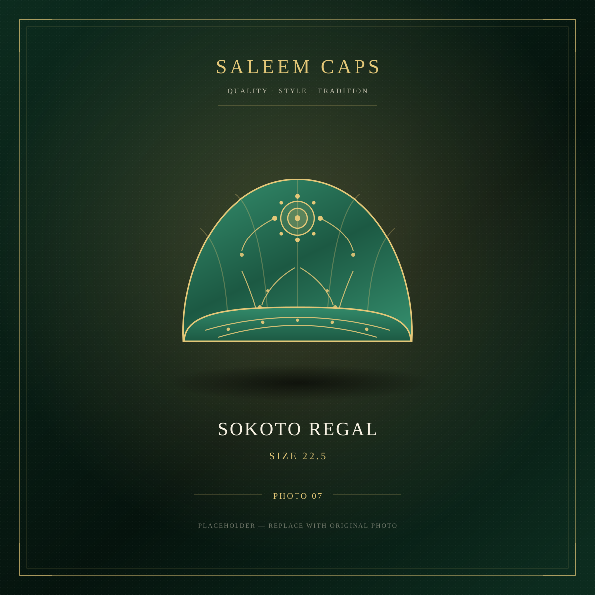

Quality · Style · Tradition
SALEEM CAPS is a Nigerian brand built on one simple belief: a traditional cap should be as beautifully made as the man who wears it.
A House of Embroidered Caps
SALEEM CAPS specialises in high-quality traditional embroidered caps — the Kufi and Topi that complete the northern Nigerian wardrobe. From our base in Laying Makera, Kafur Local Government Area, we design, source and finish caps that hold their shape, hold their colour and hold their dignity.
Each cap in our collection is chosen for its embroidery: dense, even stitching; real metallic gold thread; cloth heavy enough to sit properly on the head. We do not sell what we would not wear ourselves.
Our aim is straightforward — beautiful designs, excellent quality, honest prices and complete customer satisfaction. Whether you are dressing for Eid, a wedding, a naming ceremony or simply Friday Jumu'ah, there is a SALEEM CAPS design made for the occasion.

Our Promise To You
Authentic Craftsmanship
Traditional Hausa embroidery, hand-finished by craftsmen who have spent years perfecting the stitch.
Guaranteed Quality
Premium cotton damask and metallic gold thread. Every cap is inspected before it leaves us.
Personal Service
Order on WhatsApp and speak to a real person. We confirm every order individually — no bots, no guesswork.
Reliable Delivery
Dispatched within 24 hours and delivered nationwide — with tracking updates on WhatsApp.
One Fair Price
Every cap in the collection is ₦18,000. Transparent pricing — the same whether you order online or on WhatsApp.
Customer Satisfaction
If the fit is wrong, we make it right. Seven days to exchange any unworn cap.
From Cloth To Crown
Every SALEEM CAPS design moves through four deliberate stages — and nothing is rushed.
- 1. Selection — only dense cotton damask with an even weave is accepted.
- 2. Embroidery — motifs are stitched by hand with metallic gold thread.
- 3. Shaping — the crown is blocked and pressed so it holds its form.
- 4. Inspection — every stitch, seam and band is checked by hand before dispatch.
Find Your Cap
Sizes 21½ to 24 · ₦18,000 per cap · Nationwide delivery.